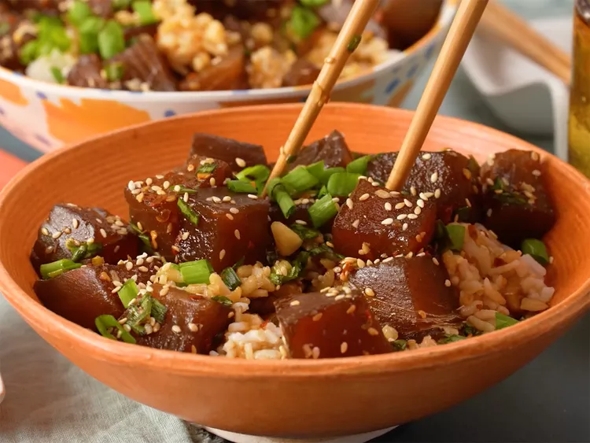

Basic Ahi Tuna Poke DishPoke (pronounced POE-keh) is a Hawaiian dish. Its name derives from the Hawaiian word "to slice or cut." The name is a good indicator of what the dish is because poke is traditionally sliced raw fish (usually tuna or octopus) that's marinated in a savory, umami-rich sauce made with soy sauce, sesame oil, and green onions.
Poke can be eaten as is, but it's typically served in a poke bowl with other ingredients — like rice, vegetables, and hot sauce.
This simple poke recipe is a refreshing Hawaiian salad featuring cubed fresh ahi tuna, tossed with soy sauce, sesame oil, and green onions, creating a dish packed with rich umami flavors.While not traditional, Chef Josh Chan likes to add macadamia nuts.This recipe serves 4 as a main dish or 8 as an appetizer.